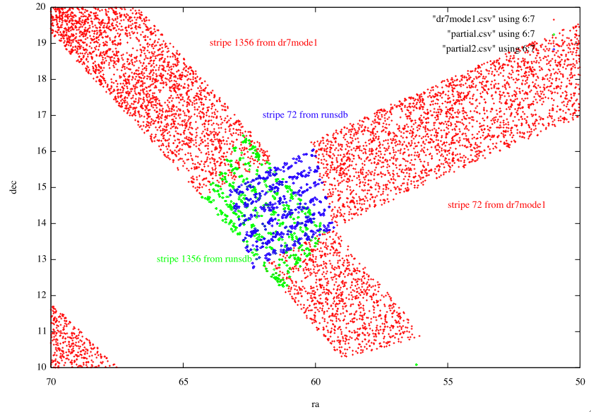
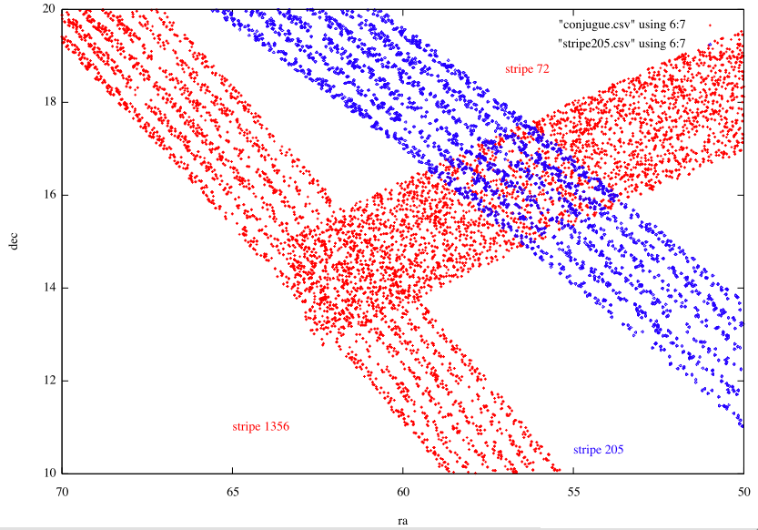

Select p.run,p.rerun,p.camcol,p.field,p.obj,p.ra,p.dec,g,mode,p.status,stripe,strip
From Photoobjall p,field f,segment s
Where
Ra between 70 and 50 and
Dec between 10 and 20 and
G between 18 and 18.2 and
p.fieldid = f.fieldid and f.segmentid = s.segmentid
(and mode=1 for the context dr7)
($11 == 1356 && $4 > 103 && $4 < 131) || ($11==72 && $4 > 321)
The South strip of Stripe 1356 from the runsdb consists of objects from run 6003.
The South strip of Stripe 72 from the runsdb consists of objects from run 4843.
The stripe 205 appears in the runsdb whereas it didn't exist in dr7. Here is a picture showing this stripe : here all the datas come from runsdb.
